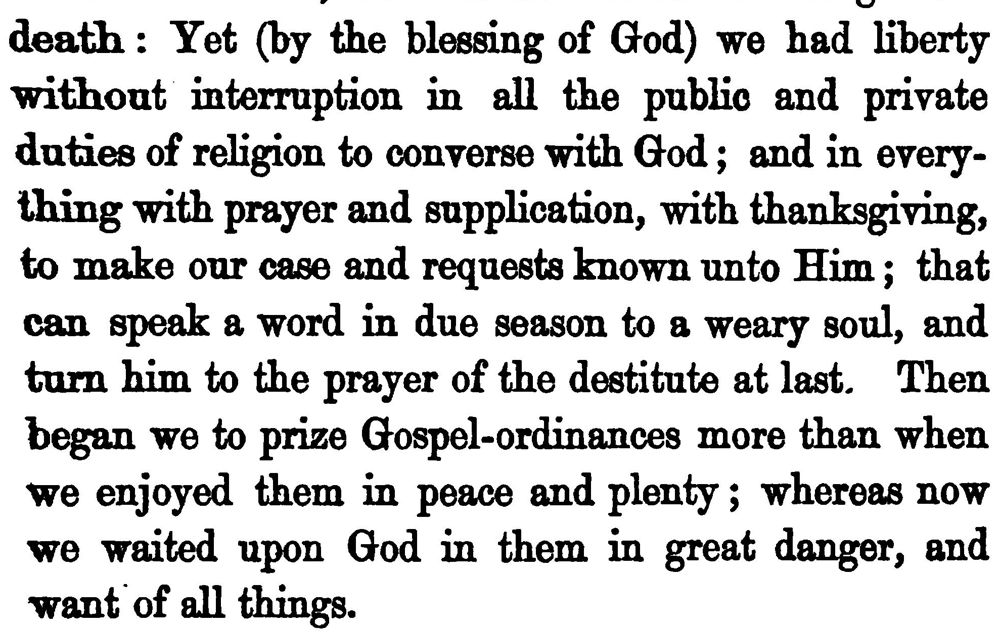
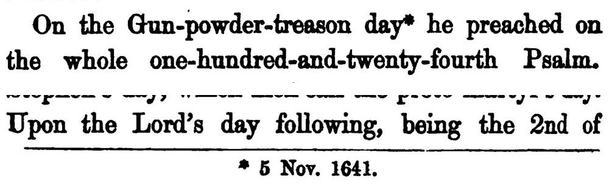

“Liberty without interruption” (p. 183)
English: London 1862, p. 183, scan n200. Clogy describes the weeks between the rising of October 1641 and the bishop’s imprisonment on 18 December.

… until the 18th day of December following; where though we got our bread daily, with the perils of our lives, … Yet (by the blessing of God) we had liberty without interruption in all the public and private duties of religion to converse with God; and in everything with prayer and supplication, with thanksgiving, to make our case and requests known unto Him; that can speak a word in due season to a weary soul, and turn him to the prayer of the destitute at last. Then began we to prize Gospel-ordinances more than when we enjoyed them in peace and plenty; whereas now we waited upon God in them in great danger, and want of all things.
“On the Gun-powder-treason day” (p. 212)
English: London 1862, p. 212, scan n229, with the editor’s footnote from the foot of the page. Highlighted: what Lecky’s note reports.

On the Gun-powder-treason day* he preached on the whole one-hundred-and-twenty-fourth Psalm. The sabbath day next after his commitment, which was the 19th day of December, he preached upon Phil. iv. 4–7 …
* 5 Nov. 1641.
Lecky (vol. II, ch. IV, note 3): “when the insurgents who retained him prisoner gave him permission to perform the Anglican service freely with his friends, he availed himself of that permission to celebrate the thanksgiving for the 5th of November.” Strictly, Bedell was not yet a prisoner on 5 November: the rebels held his house and district, and he was committed to Cloughoughter castle on 18 December.
Further down the rabbit hole
Sources that Lecky cites in the notes next to the ones that cite this page.
- Lecky, The Leaders of Public Opinion in Ireland (1861)Lecky’s first book, which he cites without naming himself
- Aquinas, Summa theologiae, II-IIHeretics and forgers; the usurper’s subjects
- Buckle, History of Civilization in EnglandWeather and credulity, and the Scottish clergy’s Devil who had been studying for five thousand years
- Rogers, RecollectionsCharles James Fox at table: “The only foundation for toleration is a degree of scepticism”
- Bayle, Commentaire philosophiqueBayle answers the Mosaic law objection to toleration
- Simancas, De Catholicis InstitutionibusAn inquisitor’s handbook: no faith with heretics, and torture


Backlinks
Every place in Rationalism in Europe that links to this page (generated automatically when the site is built).
- Chapter IV, Part II: note 3